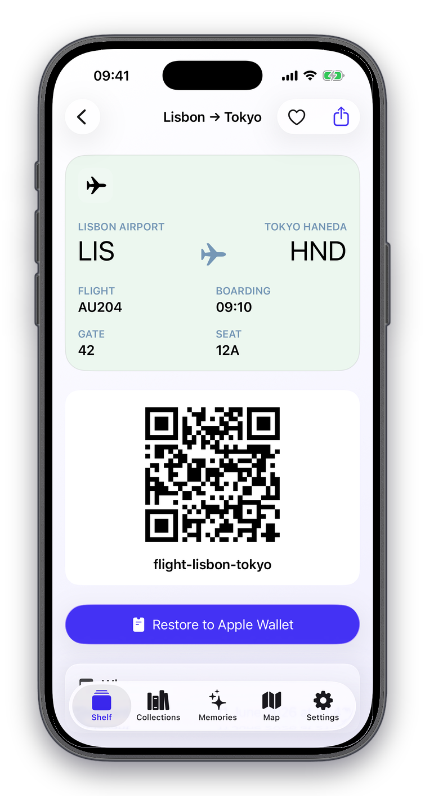
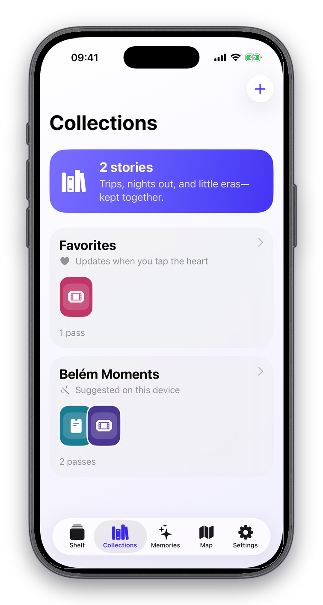
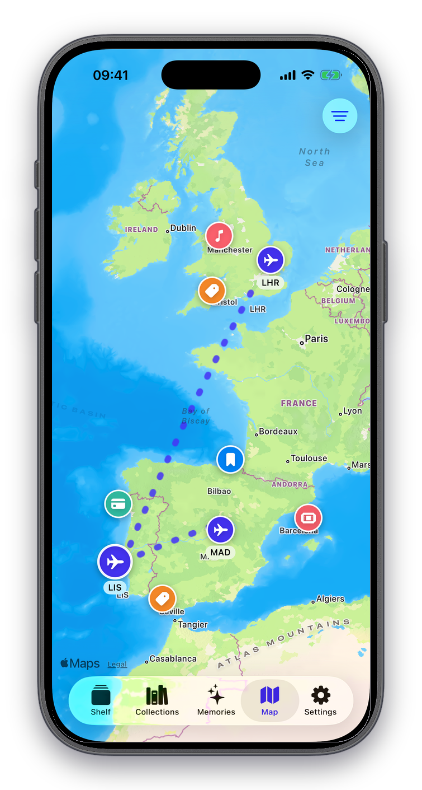
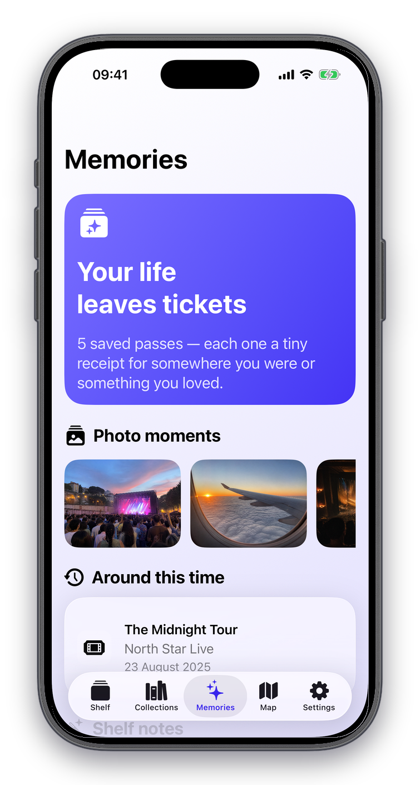
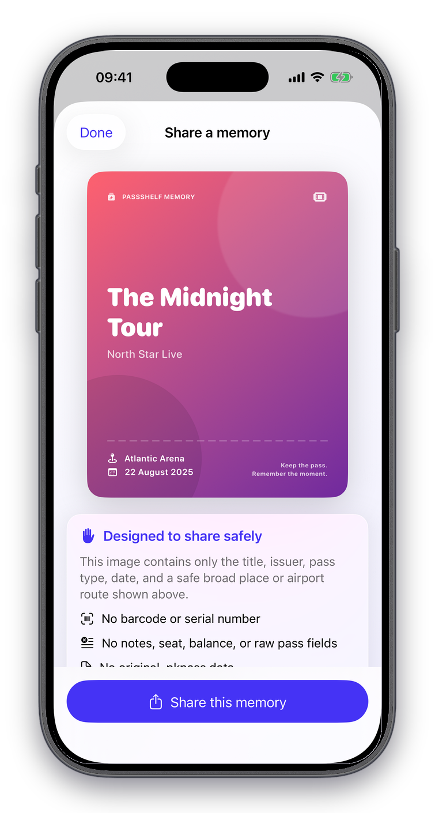

The signed originalKeep the complete eligible pass, not a screenshot.
02
Private iCloudSync without a PassShelf account or pass server.
03
Safer sharingShare a memory card without the barcode.
Your passes, still themselves
Everything worth keeping, beautifully organized.
PassShelf keeps the utility of the original pass and adds the context that turns a ticket into part of your story.
01
Keep the original
The complete pass, ready when you need it.
Preserve the signed .pkpass, issuer design, dates, locations, fields, and barcode. Open every detail and restore an eligible pass to Apple Wallet later.
Import from Wallet when the issuer allows sharing
Use Files or Mail as an alternative import path
Add notes without changing the signed original

02
Create collections
Trips, events, and chapters stay together.
Build collections yourself or let on-device suggestions find meaningful groups across your shelf. Favorites, tags, notes, and flexible layouts keep every pass easy to find.
Search by pass, place, issuer, note, or tag
Review duplicate versions before saving
Choose stacked, carousel, grid, or list layouts

03
Memory map
See where your passes took you.
Revisit Lisbon, Madrid, the United Kingdom, and every other place represented by your archive. Routes come from pass information, not live tracking.
Mixed pass types appear where they belong
Flight routes connect believable journeys
Lisbon stays at the center of the story

04
Photo memories
Bring the photo back to the ticket.
Add selected photos to passes and collections, then rediscover anniversaries, yearly chapters, and moments from around this time.
Photos Picker shares only the images you select
Passes and photos remain connected in your archive
Recaps surface meaningful moments over time

05
Share safely
Share the memory. Not the barcode.
Create a polished memory card with the broad details worth sharing. Sensitive pass information stays outside the image.
No barcode or serial number
No notes, seat, balance, or raw pass fields
No original .pkpass data

Private by design
Your archive belongs with you.
PassShelf has no developer-owned account or pass server. Your content stays on your devices and in the private iCloud database associated with your Apple Account.
iCloud
Private sync
Keep passes, collections, notes, and memories in sync across iPhone and iPad.
Lock
Device protection
Use Face ID, Touch ID, or your device passcode, with privacy covering in the app switcher.
Backup
Encrypted export
Create a portable backup protected by a recovery phrase that PassShelf does not save.
Your first 10 pass imports are free. Plus unlocks unlimited imports, photo memories, the memory map, smart collections, recaps, widgets, and encrypted backups.